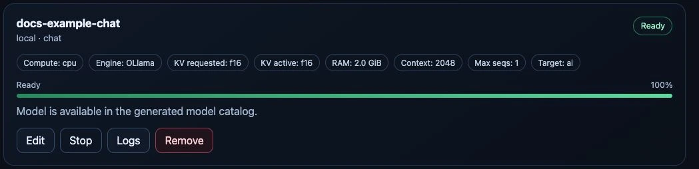
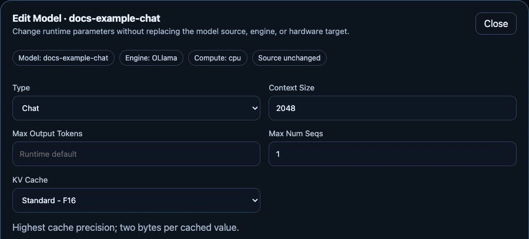
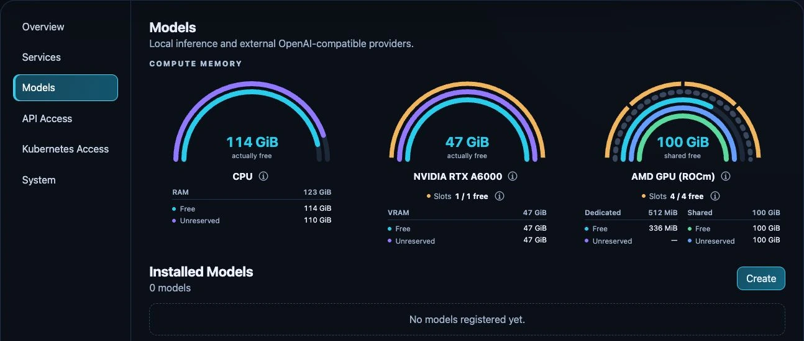
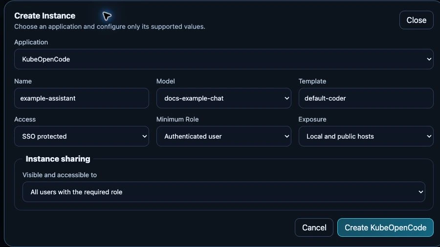
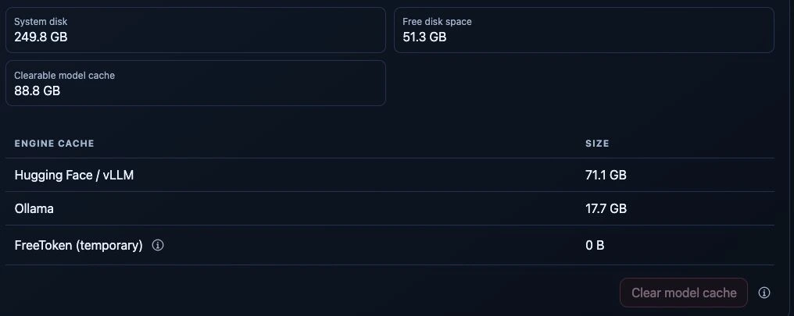

{kind=link}
{kind=link}
{kind=link}
Mit deinem Wissen arbeiten
Dokumenten-Workspaces und Chat-Anwendungen mit den Modellen deiner Wahl nutzen.
AnythingLLM · HermesAnwendungen entdecken (EN)DIE SELBST BETRIEBENE KI-PLATTFORM
Modelle, GPUs, Apps und Zugriffe. MagicStick bringt sie in einer Oberfläche zusammen – auf Infrastruktur, die du kontrollierst.
Software für deine eigene Hardware. Source-available · BSL 1.1

VOM SETUP ZUR ERSTEN ANTWORT
Auf einem dedizierten Rechner oder einer VM installieren. Kubernetes ist schon da? Nutze deinen Cluster.
Engine, passende Hardware und Speicherbudget festlegen. Den Start im Dashboard verfolgen.
Eine Anwendung öffnen oder eigene Software über die gemeinsame API verbinden.
EINE OBERFLÄCHE FÜR DEN BETRIEB
Sehen, was läuft. Ressourcen verstehen. Und Modelle für dein Team nutzbar machen.
Modellquellen durchsuchen, eine passende Engine wählen und die gespeicherte Konfiguration verwalten.

CPU- und GPU-Speicher, Reservierungen und verfügbare Modell-Slots in einer Ansicht.

Anwendungen aus dem Katalog anlegen, ein Modell zuweisen und den Zugriff regeln.

VOM MODELL ZUM EINSATZ
Starte mit einer Katalog-Anwendung oder verbinde ein Tool, das du bereits nutzt.
Dokumenten-Workspaces und Chat-Anwendungen mit den Modellen deiner Wahl nutzen.
AnythingLLM · HermesAnwendungen entdecken (EN)Agenten eigene Anwendungsinstanzen und Modelle auf deiner Infrastruktur bereitstellen.
KubeOpenCode · PaperclipAgenten-Workflows ansehen (EN)Lokale Modelle und konfigurierte externe Anbieter über die LiteLLM-basierte API erreichen.
OpenAI-kompatible API · Benannte SchlüsselAPI-Zugang einrichten (EN)Ein Modell läuft bereits? Über das optionale Private-Mesh-Modul teilst du ausgewählte lokale Chatmodelle mit registrierten Geräten.
So funktioniert die Freigabe (EN)MIT DEINER HARDWARE STARTEN
Eine GPU ist optional. Starte mit einem unterstützten CPU-Modell, nutze eine geeignete GPU oder binde einen externen Anbieter ein.
Kompatibilität prüfen (EN)| Rechenressource | Engines |
|---|---|
| CPU | Ollama · vLLM |
| NVIDIA | Ollama · vLLM · FreeToken* |
| AMD / ROCm | Ollama · vLLM |
| Intel / XPU | vLLM |
Die Unterstützung hängt von Gerät, Treiber, Architektur und Modell ab. *Für FreeToken gelten eigene Hardware-Vorgaben; es benötigt ganze GPUs. Sharing vergrößert den VRAM nicht und bietet keine harte Speicherisolation pro Modell.
AUCH NACH DEM ERSTEN START

Status und Logs prüfen, bevor du erneut startest.
Modell-Caches einsehen und eine Bereinigung prüfen.
Unterstützte Ethernet- und WLAN-Verbindungen verwalten.
Ubuntu-Sicherheitsupdates und Wartung steuern.
Bewährte Komponenten.
Eine verwaltete Plattform.
DEIN NÄCHSTER SCHRITT
Voraussetzungen prüfen, vorhandene Daten sichern und den passenden Installationsweg wählen.
Ubuntu, die Plattform und den geschützten Ersteinrichtungsprozess auf einem physischen Rechner aufsetzen.
Zur USB-Anleitung (EN) Voraussetzungen prüfen (EN)Installation und Downloads benötigen Internetzugriff. Die Ersteinrichtung gehört in ein vertrauenswürdiges privates Netz. Kein gemeinsames Dashboard-Standardpasswort.
SOURCE-AVAILABLE · BSL 1.1
Kernfunktionen einschließlich GPU-Verwaltung und Private Mesh benötigen keine Lizenzdatei. Föderiertes SSO erfordert eine Aktivierung als Free Registered oder Commercial.
Die kostenlose produktive Nutzung richtet sich nach dem Additional Use Grant: berechtigte private, gemeinnützige, Bildungs-/Forschungs- und interne Unternehmensnutzung bis 2 Mio. Euro konsolidiertem Jahresgruppenumsatz. Bestimmte kommerzielle Angebote für Dritte sind unabhängig vom Umsatz ausgenommen.
BSL ist keine Open-Source-Lizenz. Jede Version wechselt nach drei Jahren zu MIT. Maßgeblich sind die veröffentlichten Lizenzbedingungen.
VOR DEM START
Nein. MagicStick ist Software für deinen Server, deine VM oder deinen Kubernetes-Cluster. Der USB-Stick ist ein Installationsmedium, kein spezieller KI-Beschleuniger.
Lokale Inference läuft auf deiner Infrastruktur. Externe Anbieter erhalten die Anfragen, die du an sie sendest; Anwendungen können eigene Integrationen nutzen. Installation und Downloads greifen auf externe Quellen zu. Selbstbetrieb ist keine automatische Offline-Garantie.
Nein. Engine, Gerät, Treiber, Modell und Speicher müssen zusammenpassen. Das Dashboard prüft Fähigkeiten und Verfügbarkeit; eine Speicherschätzung ist aber kein Nachweis, dass ein Modell tatsächlich passt. Lies zuerst die Kompatibilitätsübersicht (EN).
Es gibt einen separaten experimentellen vLLM-Omni-Pfad mit festgelegten Profilen. OpenAI-kompatibler Chat bedeutet nicht automatisch Audio- oder Realtime-Unterstützung. Mehr im Realtime-Leitfaden (EN).
Beginne mit den Anleitungen zur Fehlerbehebung (EN) und der Support-Richtlinie (EN). Projektunterstützung erfolgt nach Möglichkeit, ohne garantierte Antwortzeit. Zugangsdaten und private Installationsinformationen gehören nicht in öffentliche Issues.
WENIGER ZUSAMMENBAU. MEHR MÖGLICHKEITEN.
{kind=link}